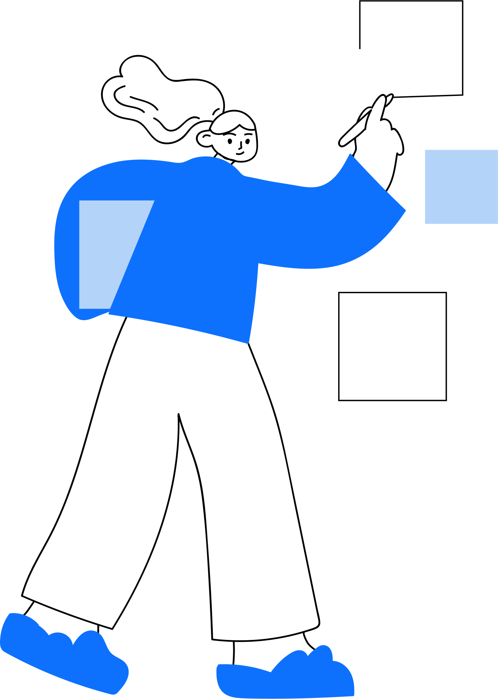
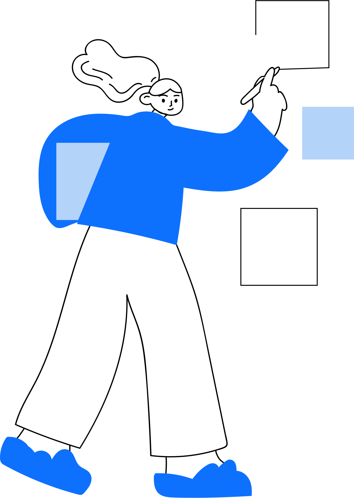
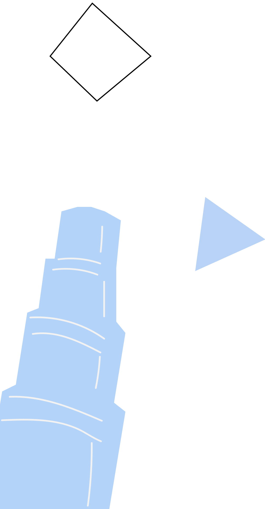
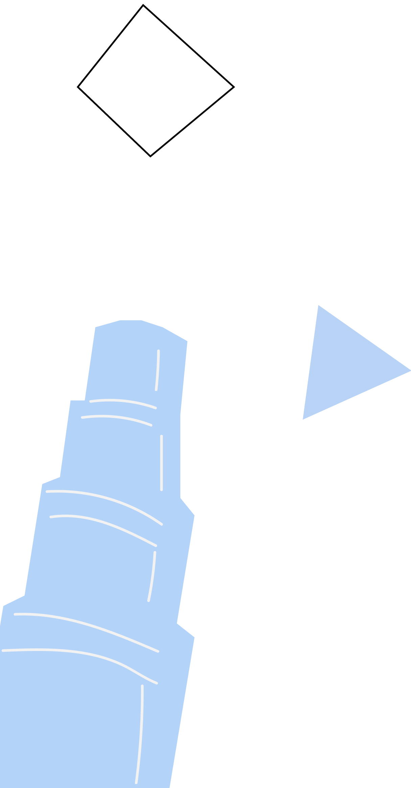

Открой новый мир
с помощью FINCH
Finch — это социальная сеть для путешественников. Каждый может рассказать, поделиться опытом и найти самые актуальные советы и истории из поездок

Finch — это социальная сеть для путешественников. Каждый может рассказать, поделиться опытом и найти самые актуальные советы и истории из поездок


 

 

Надоело искать полезную информацию о предстоящих поездках, часами проводя в интернете? Создавай путеводители, рассказывай другим о своих крутых впечатлениях и узнавай самые актуальные новости


Листай ленту и следи за обновлениями, подписывайся на интересные профили, быстро и удобно создавай свои путеводители и вдохновляйся благодаря специальным подборкам лучших путешествий
Создавая путeводитель, ты можешь выбирать типы карточек, чтобы сделать его понятнее и удобнее: рассказывай о конкретных местах, добавляя текст, фотографии и адрес, или делись целой историей, объединяющей разные места одной тематикой


Кто едет в США и не забирается на Эмпайер Стейт билдинг? Для посещения смотровой площадки на 86-этаже этого американского небоскреба достаточно заплатить 37 USD в кассу. Подняться наверх можно будет при помощи специальных скоростных лифтов или пешком. Правда, в последнем случае стоит учитывать, что, преодолевая путь с улицы до 102 этажа небоскреба, вам будет необходимо сделать 1860 шагов.
Читать в приложении →Букчхон — это один из старых районов Сеула, который сохранился до наших дней. Фольклорная деревня появилась здесь практически одновременно с основанием Сеула более чем шесть столетий назад. Дома дворян в традиционном стиле дошли до нас практически в неизменном виде. Я считаю, это отличное место для того, чтобы прочувствовать настоящую корейскую историю на себе, посмотреть, как жил здесь народ
Читать в приложении →О Сиднейском оперном театре, наверное, знает каждый. Он находится в гавани на Беннелонг-Пойнт, и до него очень легко добраться из любой точки города. Доехать до него можно на пароме, поездом или автобусом. Остановка находится в нескольких минутах ходьбы, мы с друзьями использовали паром. Если ехать на пароме, то нужно направляться в сторону причала бухты Сёркьюлар Ки. Пешком от центрального парка, пройдя 1 км можно тоже выйти к театру.
Читать в приложении →Мне довелось попасть в одно из самых популярных кафе Парижа. Должна сказать, очень там многолюдно, особенно вечером, но свою оценку оно действительно оправдывает. Есть веранда (курящим разрешено курить за столиками), быстрое обслуживание, хотя бы один официант говорит по-английски, вкусная качественная еда. Однако цены мне показались неоправдано высокими: — «малый» завтрак (кофе, круасан) — стоит 8,5 евро,
Читать в приложении →

Хан аль-Халили — рынок в старой части города Каир. Он расположен западнее Мечети Аль-Хуссейн и считается самым большим рынком Африки. В рынке находится множество переулков, магазинчиков и кафе, где можно попить чая и курить шишу. Замечательное аутентичное место, пропитаное невероятной атмосферой. Я советую приезжать сюда на целый день, потому что за пару часов его весь не обойти.
Читать в приложении →